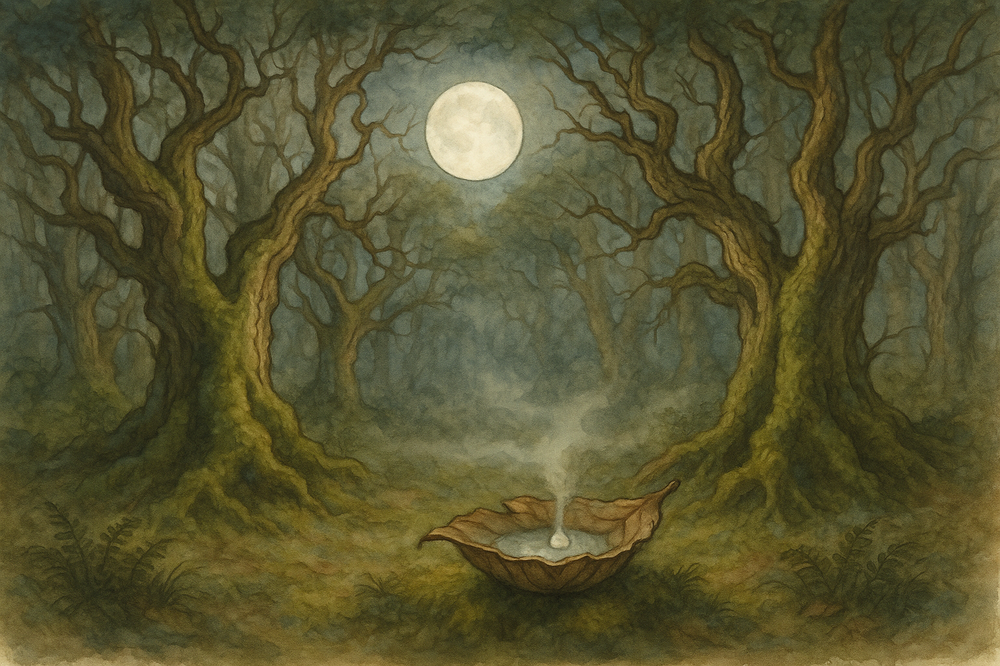

Late Third Age, on the edges of Fangorn, when moonlight falls like milk through leaves and even an axe may grow shy.
There are drinks in Middle Earth that warm the belly, and drinks that sharpen the tongue, and drinks that make a man feel taller than he is. The drink in this tale does none of those things; it simply makes you remember you are small, and that is sometimes a kind of saving.
On the western marches of Rohan, where the grass runs like a green sea and the wind has more room than manners, there lived a woodman named Heref. He was not a bad fellow; he spoke softly to horses, and he did not waste good iron. Yet he had one fault as plain as a knot in a beam: he was quick.
Quick to decide, quick to laugh, quick to swing his axe. He would look at an oak and see only straight boards, and look at a fallen bough and see only firewood. “A tree is a tree,” he said, and that was the whole of his wisdom.
Now it happened, in those days when the White Wizard’s voice was still heard at Isengard and riders watched the borders more sharply than sheep, that Heref went farther east than he ought. A storm came up like a black cloak flung over the sun, and the wind drove him until he lost the line of the downs and found himself among the first dark undergrowth of Fangorn.
Fangorn is not like other forests. Most woods have a chatter of leaves and birds, and even their shadows feel like something you can step over if you mind your feet. But in Fangorn the shadow is not a thing that lies; it is a thing that stands. The trunks are older than many kingdoms, and the moss has had time to learn patience.
Heref, being quick, did not turn back at once. He said, “It is only trees,” and pressed on, thinking to cut across and find the plain again. He found instead that the forest did not approve of straight lines. Paths that looked plain enough became tangled as soon as he trusted them, and clearings that should have opened onto sky opened onto more trees, deeper and broader and more intent.
By evening his cloak was soaked and his pride was too tired to stand up. He came upon a hollow where the ground rose in a ring, and at the centre was a stump—no, not a stump, for stumps are dead. This was a great root-wound, healed over with bark as thick as a door, and in its heart was a little cup-shaped hollow, as if a giant hand had once set down a bowl and forgotten it there.
Something pale gleamed in the hollow.
Heref stepped nearer. The pale thing was not stone. It moved with the slowest motion, like cream in a pot when you tilt it. The moon, newly risen, slid between branches and poured a thin silver beam into the cup. At once the pale liquid brightened, as if it had been waiting for that exact touch.
Heref licked his lips. He was hungry, and thirst is a persuasive councillor. “Milk,” he said aloud, though he had not seen a cow for half a day’s ride. “Some beast’s milk, caught here.”
A voice answered him, and it came not from any side but from the very air and wood about him. “Hoom. Milk?”
Heref froze. The voice had the sound of deep water speaking through roots—slow, full, and not at all in a hurry to be understood. He turned, and the ring of trees seemed to lean inward a little, listening.
“Who’s there?” he asked, and heard how small his own words were.
There was a long silence in which a leaf fell, and in its falling seemed to take its time about everything since the beginning of the world. Then a shape shifted beyond the stump: a trunk that was not a trunk, a face that was not a face until it was.
Two eyes opened, brown as old bark and bright as wet earth. They looked at Heref as one looks at a beetle that has crawled onto a boot: not with anger, but with mild astonishment that it has chosen that place.
“Little axe-man,” said the voice. “You are off your grass.”
Heref’s hand went to the haft at his belt by habit, then stopped of its own accord. The forest seemed to breathe around him, and he had the queer thought that if he raised iron here, the very air would grow heavy with disapproval.
“I lost my way,” he admitted. “Hoom,” said the tree-voice. “Yes. Your way lost you.”
Heref swallowed. His eyes flicked again to the pale cup. “Is that… for drinking?”
The great face regarded the hollow. “That is moon-milk,” it said at last, as if naming a thing that needed no explanation. “Moon-milk?” Heref echoed, feeling foolish. “Sap,” said the voice, and there was a faint creak as if a thousand slow joints were remembering themselves. “Not for your kind. Not for taking.”
Now, a quick man does not often lose his quickness just because he is afraid. Heref’s fear turned into a sharp little spark of stubbornness. “If it is here,” he said, “it is fair. A man may drink what he finds.”
The eyes did not narrow—tree-eyes do not do such things. Yet the hush deepened. “A man may also put his hand into a badger-hole,” the voice replied. “It is a sort of freedom.”
Heref’s cheeks burned. “I meant no harm.” “Most harm is not meant,” said the voice, and that was the first truly heavy thing it had said.
Heref stood there, wet and small, and the moonlight made the pale sap look like a kindly thing. He thought of his hut, of smoke rising straight from a chimney, of a cup of ale. He thought of being lost until morning, perhaps eaten by wolves or simply by cold. Quick men, when they see a way out, grab it.
He stepped forward and dipped two fingers into the hollow.
The sap was colder than river-stone. It clung to his skin like a memory, and for an instant he felt something not in his fingers but behind his eyes: a slow, vast sensation, as if the world had leaned down and pressed its forehead to his.
He tasted it.
It did not taste of milk. It tasted of rain caught in leaves, of green growing in dark, of the inside of an acorn, of time. It tasted of the first spring after a hard winter and the last autumn before an age ends. It tasted, strangely, of grief that has learned to stand upright.
Heref’s breath left him. For a heartbeat his thoughts were not quick at all. They were slow, and in their slowness they saw too much.
He saw, without words, a hillside shaved bare where once there had been shade. He saw nests dropped and broken like eggshells. He saw a young tree bending in the wind and being cut down before it had learned its own song. He saw the forest watching, not in rage but in an old, tired hurt.
And he saw himself, very small, swinging an axe as if the world were his woodpile.
Heref’s knees hit the leaf-mould. He did not weep noisily; he simply sat, and his hands trembled as if they had at last understood what they had been doing all these years.
“Hoom,” said the tree-voice, softer now. “There. Now you have swallowed a little of what you have been spending.”
Heref looked up. “I am sorry,” he said, and the words were plain, without cleverness. “Sorry is a beginning,” said the voice. “Not an ending.”
“Will you… kill me?” Heref asked, because fear still has its place. The great eyes blinked once, and the blink took a long time. “Kill?” the voice said, as if tasting the word. “No. That is quick.”
Another silence, and somewhere far off an owl spoke, uncertainly, as if asking whether it was permitted.
“Listen, little axe-man,” said the voice. “You are lost. You will be found. Not by you. By the road.”
Heref did not understand, but he nodded, for nodding is sometimes all a small creature can do when a mountain speaks.
The tree-voice—Ent, some would call it, though Heref did not yet have that word—moved, and the ground itself seemed to shift with it. A long arm, barked and furred with lichen, reached down. In its palm lay a cup of woven leaves, newly shaped, with a bead of the pale sap shining in it like a small moon caught in a net.
“One more,” said the Ent. “Not for thirst. For promise.”
Heref took the leaf-cup with both hands. He did not gulp. He sipped, as one sips a thing that might change you.
This time the taste was gentler. He felt the quickness in him slow—not vanish, for a man must be quick sometimes to save a child from a river or a lamb from a briar—but settle into its proper place, like a knife returned to its sheath.
When he had finished, he looked up and found that the Ent was watching him with something like amusement, very far away. “Now,” said the Ent, “go. Not straight. Straight is for spears.”
Heref rose, his legs unsteady. “How do I leave?” “Follow what is kind,” said the Ent. “Not what is easiest.”
Heref walked then, slowly, and the forest did not tangle itself against him. The trees seemed to stand aside by inches. He was guided not by a path he could name, but by small mercies: a patch of ground that did not trip him, a gap in brambles, a place where the wind smelled faintly of open grass.
Before dawn he came out upon the edge of the plain. The first light lay on the world like a hand laid gently on a fevered brow. Behind him Fangorn stood, dark and massive and utterly uninterested in being thanked.
Heref went home. He did not burn his axe—folks would have laughed, and laughter is also a kind of quickness—but he learned to carry it as one carries fire: with respect and with care for where sparks may fall. He cut fewer trees. He mended more fences. He left old oaks alone, even when the boards would have been fine.
And when men at the ale-bench spoke of Fangorn as if it were only timber waiting to be claimed, Heref would fall silent. If pressed, he would say, “There are drinks that make you brave. I had one that made me small. I do not recommend it to the proud.”
Some laughed. Some did not. And on clear nights, when the moon is thin and sharp as a nail-paring, the older woodmen say they have seen a pale gleam deep among the trunks—like milk in a cup—though none of them, if they have sense, go looking for it.
— Bilbo